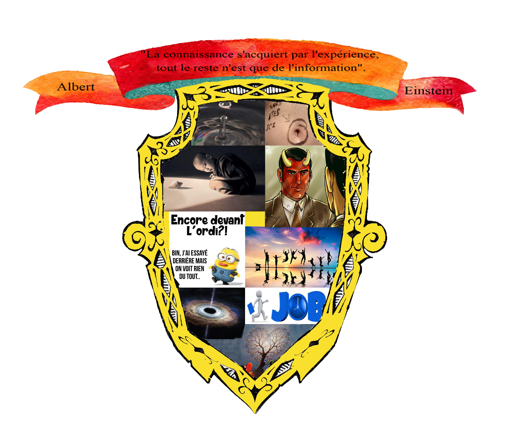

Dans ce blason, vous trouverez ce que je pense être, ce que j'attends des autres, ce que je ne voudrais pas être et ce que j'attends de la vie.
Ma devise « la connaissance s’acquiert par l’expérience, tout le reste n’est que de l’information » d’Albert Einstein. Pour moi les apprentissages sont essentiels tout au long de notre vie, de nos développements (marcher, parler, écrire, conduire etc). Nous transformons nos connaissances en compétences dans nos milieux familiaux, professionnels, sportifs pour devenir forces en nous. L’information quant à elle peut être entendue, redite sans pour autant nous transformer, devenir des forces utiles.
La goutte d’eau qui tombe représente la patience. C’est moi qui ai pris cette photo et j’ai persévéré jusqu’à obtenir la photo que je désirai. Je continue sans cesse sans me décourager.
Cette photo pour dire que je ne suis pas centré sur moi-même. Je suis attentif aux autres et à mon environnement. Depuis l’âge de 10 ans je m’occupe de mes frères et sœurs et soutiens ma mère. A 16 ans j’ai commencé à travailler comme surveillant de baignade et me suis engagé dans une association de secourisme.
Je suis à l’écoute des autres. Cette photo corrobore la précédente. Je suis quelqu’un de tranquille qui aime écouter le « silence » de la nature lorsque je photographie des paysages. Je transmets ma tranquillité et ma paix à ceux qui m’entourent.
Je ne suis pas quelqu’un de mauvais. Je ne fais pas de mal aux autres et ne supporte pas l’injustice, les mauvaises choses et les mauvaises personnes.
Je suis passionné par l’informatique et les nouvelles technologies. Je suis donc souvent devant mon ordi et ne vois pas le temps passé.
Pour moi la famille et les amis sont essentiels dans la vie de l’Homme. Ces deux corps nous aident à vivre les moments heureux nous soutiennent dans les moments difficiles. Grâce à eux nous ne sommes jamais seul, nous avons toujours quelqu’un à qui parler, des personnes toujours ok pour nous aider.
Je n’attends rien de particulier des autres. Je compte beaucoup sur moi-même et sur mes apprentissages, mes connaissances. C’est le travail qui nous forge.
Pour l’avenir je souhaite avoir un job qui convienne à ce que je suis. Un travail où je puisse m’épanouir et rendre service.
Mon espérance familiale est de vivre en harmonie avec celle qui fera partie de ma vie. Un respect mutuel de qui nous sommes sans avoir le désir de changer l’autre.